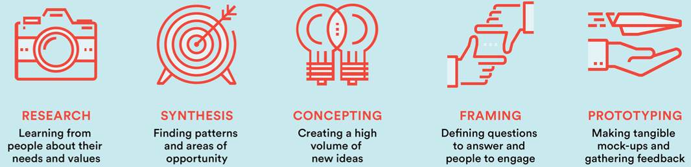
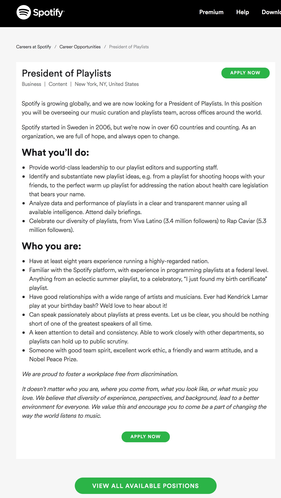
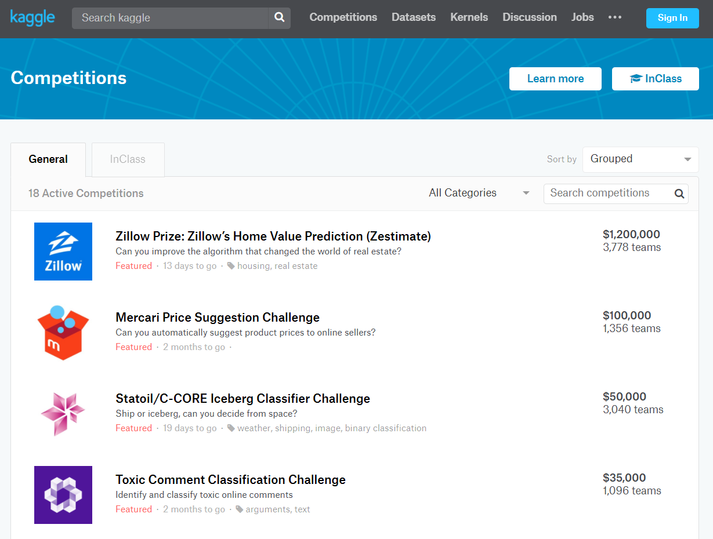
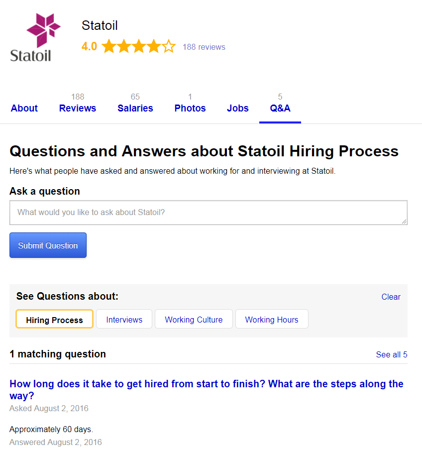

IWhy are we doing this?
Help HR attract the right hires in an innovative way
We are very excited to be part of the digital transformation that is going on in our company today - because we understand that consumers today are ASKING for a different "car" and different means of "mobility" - a car with in car connectivity, Over-The-Air update, AD...
So the golden question is... who will build the future Volvos?
As you know, during 2016 our company sold more cars than ever last year, we also brought on-board 3000 new employees. During 2018, we are hiring 200 at the Mountain View office next year.
Our company has huge recruitment needs. We need global talents with sharp mindset. Of course the competition for these smart people is fierce. We see a lot of companies going an extra mile (flashy ads and perks) to attract talents. Instead of falling behind, we should step up and truly become the "employer of choice" for them... Just as attractive as Spotify, Google and start up communities.
Reality check! Where are we going to find these talents... and how can we attract more of this talent and retain them?
IIMeet The Team
Back to Toolbox
Hej!
We are from the Group IT's innnovation and digital services team. We like disruptive technologies that challenge the way things work today.
- Project Lead: Azra
- Creative: Emma
- Graphics: Gaia
- Gimmy:
Azra is experienced with innovation projects and at working with start-up communities around the world.
Emma has a passion for Virtual Reality movies. Her team created VR content for the Volvo Stuios.
Gaia has the special talent of making visual information more pleasing to the eye. She is adept with Photoshop and Illustrator.
Gimmy has a special interest in technology. He uses his analytical skills to treat problems.
IIIOur Method
Back to Toolbox
We combed the internet to spot new trends
- Scanned for new technologies
- New generation entering the workforce, what about the new behaviours and attitdes?
What are some apps or software that HR specialists, job candidates, hiring managers and their teams are using today?
We conducted 26 interviews inside and outside of Volvo
- Open questions around recruitment and work environment
- Listened to suggestions for improvements
- Summarized into 272 quotes
Voila! We created a "Toolbox" for you
We compared findings on the internet against what people said during interviews.
- On one hand, articles online described many exagerated scenarios that did not exist at Volvo.
- On the other hand, there is an abundance of services and solutions for every pain point that surfaced during interviews.
We synthesised such Needs into six catagories, which you will find in the Toolbox below. For each of the six categories, we included many BIG and small points where we can improve.
IVLearn from the Best: Spotify
Back to Toolbox
We really admire what Spotify has done with their HR and recruitment approach. No wonder they are ranked #1 on Glassdoor.com.
Recently Recruited: “When I was applying for jobs, I saw Spotify is on top of the Glassdoor rating list. Volvo also has good ratings on Glassdoor - work place culture is important for me.”


Recently Recruited: “Spotify uses Jobvite.com to show progress of application.”
Candidate: “Spotify have talent recruitment programs at schools as well as summer internships in San Francisco. Spotify is figuring out what would keep their employees at the company. They send Sweden based employees to NY and SF for periods of time.”


Candidate: “Spotify has short videos of past interns and explaining their background, application process and their experience which was very transparent and personal and gave an insight about the company.”
We interviewed two person at Spotify (one former recruiter and one current UX designer) to get more inspirations. Here is a short list of unique things they do to stand out:
- Coders assess coders
- Street Team recruitment
- #MeToo hackathon
- "President of Playlist PR stunt" 
- "We have received your application!"
Spotify has a much flatter hierachy. For example, the managers of a team of coders is a part time coder part time manager.
Spotify has open Facebook "recruitment" events where anyone can register as "interested". Spotify sends on invitation to selected ones. An example of Spotify being present on platforms where talents are, and using everyday applications to simplify the process.
Extremely relevant and concurrent with the lastest social topics.
The job description, created in-house at Spotify, seems to fit Obama like a glove. Among the responsibilities are providing "world-class leadership to our playlist editors and supporting staff," identifying and substantiating "new playlist ideas, e.g. from a playlist for shooting hoops with your friends, to the perfect warm up playlist for addressing the nation about health care legislation that bears your name" and analyzing "data and performance of playlists in a clear and transparent manner using all available intelligence."
You can check your application status on Jobvite.com (no more frustrated canadiate emailing regarding the progress of application assessment). And please enjoy this playlist (how human is that!).
VThe Toolbox
Finding Talents at New Places |
Job Ads |
Faster HR Processes |
Application Experience |
Assess Talent Effectively |
Employer of Choice |
1Finding Talents at New Places
Back to Toolbox
Hallo Talent! Look here!
Physical Presence Still Needed in 2018!
Apart from online job boards and traditional student/job fairs, there are various new recruitment strategies that include in-person recruitment events such as meetups, competitions, hackathons, maker spaces, workshops or other social events. Some companies take an aggressive approach and put on these types of events.
The modern equivalent of that is running similar initiatives on sites frequented by desired candidates.
The word on the street:
Hiring Manager: “We need to target passive candidates through channels like hackathon.”
Hiring Manager: “I should attend more events or work with other companies.”
Millennial Talent: “Career fairs are not effective”.
Recently Recruited: “Blah”
Candidate: “blah”
Suggestions!
Don’t Wait For Candidates To Find You...GO WHERE THEY ARE!
1. Host + Participate in Meetups, Hackathons, Keynotes, Workshops, Maker Spaces, Competitions, Startup Communities Events
Volvo and Hyper Island event held in Stockholm.
Kaggle is a platform where one can improve their coding skills. It also hosts coding competition. Winner take home a prize or maybe even a job offer!
One candidate from our interviews mentioned Statoil doing "cool stuff" several times. We are not surpised when we find Statoil's footprint everywhere!
2. Design office spaces with possibility to host collaborative events in mind
3. Use Downtown studios for events and recruiting
4. Have a dedicated team in each department that helps out with recruitment
5. Sponsor and attend popular new tech events where new talents are:The Next Web, Collision, CES, Sónar+D, SXSW etc.
6. Run events and communicate with talents on their platforms of choice and sites that they frequently visit
Back to Toolbox
2Job Posting
Back to Toolbox
So much text!
Job ad that contains the “right” amount of information and is pleasant for the eyes is appreciated. No need for super fancy ads. Talents want to have an honest perspective about the job, how it fits into the purpose of the department, and also what he team atmosphere is like.
Job descriptions needs to be more genuine!
- Who are your colleagues
- What will you do in your role
- Possibility to ask questions
- Requirements should be more flexible
Job boards are more popular than ever!
- Indeed, Glassdoor, StepStone, CareerBuilder - candidates can easily find first-hand info about a company, network with potential colleagues.
- E.g. on Glassdoor, the company’s working experience is transparent.
Location! Location! Location!
Instead of looking up job opportunities on job board websites, the job search functionality is integrated into sites and forums where specialists use everyday (e.g. StackExchange, Behance)
Many companies are using more casual job ads with 2-3 “Must have” skills and 5-6 “nice to have”
The word on the street:
Hiring Manager: “Job ads make the role sound very boring. Don't want to lie to the candidates but don't want to be too honest either.”
Candidate: “The ads are too positive, not realistic!”
HR: “In order to keep the consistency in branding, job descriptions are kept consistently "boring ".”
Recently Recruited: “Volvo has good ratings on Glassdoor - work place culture is important for me.”
Candidate: “Instead of a pdf with job description, it would be better to have vlogs, videos because it puts a human face and gives personality to the organisation.”
Candidate: “It is very hard to apply for job on the Volvo Cars career site. I don't know which job to apply for.”
Hiring Manager: “It would be great to promote career working at Design through the career page.”
Suggestions!
A picture is worth a thousand words!
Job postings should be less wordy and be open to use alternative medium. Using software like www.homerun.co and someone creative to create beautiful job ads.
Be interactive and be visual!
Statoil has had QA live chat on LinkedIn and that demonstrates good company culture. Including employees photos, videos, blogs, infographics to attract candidates and put a human face to it.
Back to Toolbox
3Faster HR Processes
Back to Toolbox
Hurry! Hurry!
With a plethora of new tools, hiring should be much easier and considerably quicker than ever.
However, it appears that many feel that the process is still slow, causing frustration and productivity loss.
Today slow hiring process can quickly be revealed on social media. For example, glassdoor.com list problems with the hiring process, and they almost always reveal how long it takes in days to complete the hiring process.
The word on the street:
Hiring Manager: “It takes a long time from reading resume, interviewing, drug tests, until contract signing... A lot of things can happen and we lose candidates.”
Hiring Manager: “We wish HR is directly involved in our daily work, so they know exactly the kind of people we want.”
HR: “I wish hiring managers can receive the right training - be more engaged, more accountable, and use HR as SME instead of "transactional".
Hiring Manager: “HR is not helping me with recruiting. They just help me once someone is recruited ".
Candidate: “???”
Suggestions!
Eliminate Steps That Add Time To Hiring Process.
1. Mobilize all employees!
Notify existing employees of the open positions (intranet) by having internal job opportunities clearly visible on the Intranet page.
Make everybody in the company become a proactive scout. Create internal talent pool, tag candidates and enable everyone to source talent effortlessly.
Introduce referral programs to fast track the recruitment process with cash incentives or other perks when successful hires are made.
Have dedicated champion at each department that works on HR tasks and receives trainings. Review together, and engage the team at different steps of the hiring process.
2. Have an open application data base and use AI-based job match-making software to screen and collect candidates.
3. Create a long-term talent plan.
Back to Toolbox
4Application Experience
Back to Toolbox
If you'd like to track your progress, just follow the link here:
Spotify uses Jobvite.com to show progress of application.

Nearly 60% of job seekers have had a poor candidate experience, and 72% haves shared their experience on online employer review sites such as Glassdoor.com (LinkedIn).
60% of job seekers report they have quit an application due to its length or complexity (Recruiting Brief).
The word on the street:
Recently hired: “I started the application in July but didn't hear back from the recruiter until end of September.”
Candidate: “I think it would be very interesting to have a “behind the scenes” view of the application process. It would create trust in the fairness of the process, and would also provide applicants with a certain “time frame” for response.”
Candidate: "Ability to apply directly with LinkedIn profile lowers the barrier of entry."
Hiring Manager: “Rejected applicants feel like their application was not treated by a human. Lack of feedback. Needs to be more personal.”
Candidate: “Very tricky to use the Volvo cars company career site. Some jobs on LinkedIn but not on the company website.”
Suggestions!
1. Create fuss-free, friendly and modern application possibilities (mobile first application forms.)
2. Make sure that the candidate feels valued providing regular updates and personal feedback
Visualize progress of the application and keep close relationship to the candidate
Track Candidate Experience and how effectively recruitment process is performing by insightful statistics (Glassdoor, Big Data)
3. Utilize feedback to market the company - embed videos, link to a blog posts, include a podcast with the CEO, invite to downtown store, test drive, an event, etc.
4. Live chat interview could be fun!
Back to Toolbox
5Effective Talent Assessment
Back to Toolbox
There are lots of great new software out there!
Nobody likes CVs.
Applicant management systems are no longer “HR-specific” software. They are made more user-friendly towards hiring managers and for their needs. E.g. test platform codility.com allows managers to compare various candidates’ coding performance.
Use of artificial intelligence is deployed by job boards such as Entelo and First Job to suggest suitable candidates based on resume scanning. Good&Co suggest candidates based on personality traits.
The word on the street:
Hiring Manager: “I always bring in consultants first, because it is quicker and cheaper (recruitment process cost a lot of money), and it is a good way to test someone.”
Hiring Manager: “When someone internal tips an applicant, the hiring process is fast tracked and the person could be hired within 2 weeks.”
Candidate: “It is important to take candidates motivation into consideration (not only set skills).”
Hiring Manager:: “Screening 80 applicants took a long time. I only look at the CVs - no time to go through every motivational letter. Many irrelevant ones could have been automatically filtered away.”
Candidate: “AI can scan text, but can it notice if the applicant has designed the resume in a specific eye-pleasing theme?”
Suggestions!
1. The basic CV should be replaceable by LinkedIn
Basic information are easily extracted, no need to fill in forms, and can be scanned using AI
Example:Entelo and First Job to suggest suitable candidates based on resume scanning. GoodCo suggest candidates based on personality traits.
2. Various tests to spot talents with the right skillset and mind-set
Example: Test platform codility.com allows managers to compare various candidates’ coding
3. Discussion with the team - P2P
Millennial assessing millennials, team member assess team members, like Spotify does.
4. Help certain candidates stand out by providing platform to submit videos, portfolios, etc.
5. Referral channels
Referral expedite the hiring process. Make it easier and known to all employees that such shortcut exists.
Back to Toolbox
6Employer of Choice
Back to Toolbox
Show That We Are On Our Mission To Solve Great Problems And We Will Kick Ass
Millennial are not actually “job hoppers” – if the company provide enough value, they will stay happily.
Over 80% of leaders acknowledge that employer branding has a significant impact on the ability to recruit.
Employer branding is used to describe reputation as an employer, and its value proposition to its employees, as opposed to its more general corporate brand reputation and value proposition to customers.
Effective employer brand messaging focuses on culture and career growth for candidates.
While the older generation is more attracted to benefits such as pension, company car, etc. the millennial is more attracted to perks, such as free breakfast - know what keeps the employees content.
Feedback on performance and career opportunities are important for millennial – they want to be engaged and contribute at the workplace.
Despite the fascination around perks and colourful workspace associated with Silicon Valley tech giants, talents are more attracted to a company due to its competitiveness and boldness in the industry.
The word on the street:
Hiring Manager: “Candidates are interested in Volvo because of our mission, vision and products.”
Hiring Manager: “There is no possibility to do fun stuff, like a board games night, at the office outside of working hours. If you are seen "playing cards", then it means you don't need to recruit.”
Hiring Manager: “The pace is generally slow at Volvo, and a lot of small processes really slow the flow.”
Candidate: “Big companies are attractive places for starting one's career as it provide possibility for career growth within the company - more so than performing various jobs at consultancy company.”
Candidate: “Perks are nice to have but not important to me. ”
Candidate: “I love to be inspired and I've always had someone as a role model.”
RCC Manager: “Employees may want to work as internal consultants, having the ability to move around instead of getting tied town to a position.”
Hiring Manager: “I wish there would a "menu" called career on the website, so it is easier for someone to learn about opportunities in different departments.”
Suggestions!
Present vision and mission of THE department that is employing, NOT the whole company's
Talk about challenges and great problems that need to be solved (not only about how good we are). Talk about how arw we an innovative employeer who is forward thinking!
Be more human in the approach
Candidates see through the BS. Be honest and transparent.
Show off companie’s culture.
- E.g. invite people/influencers to work for the company and promote the work on social media
- Happy work enviroment!
- State how we are different from large corporations (e.g. team is autonomous with mandate etc.)
- BLAH
Career Map
- Talents want to move to different roles because they want to explore and develop. Show candidates that Volvo is a place where one can develop and try different career path. Have mentors and role models available to give career advice.
- Talk about carrer growth possibilities
- Present global job possibilities
- Promote the Software side! Many career opportunities are not advertised enough to the public. Increase general awareness that we are moving into “cloud based” software development.
One person multiple jobs
Have a flexible form of employment, work cross functionally, and provide possibility to crowd source for projects.